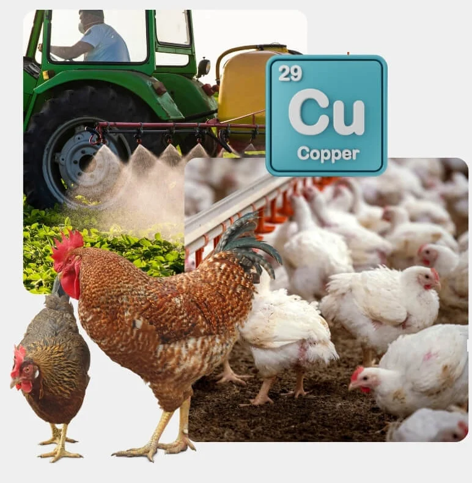
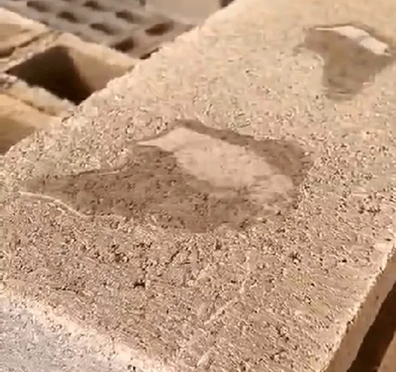

Soluciones innovadoras y sostenibles que impulsan su negocio.
Del campo a la construcción, las nanopartículas elevan el desempeño de productos en nueve sectores.

Avicultura
Uno de los principales focos de NanoBrasil en Brasil: llevar nanopartículas antimicrobianas al sector avícola.
Nanocobre y nanopartículas de óxido de zinc
La cama avícola reúne humedad, materia orgánica y microorganismos durante todo el ciclo de crianza, y es uno de los principales focos de contaminación del lote. Las nanopartículas de cobre actúan como agentes antimicrobianos: en contacto con bacterias y hongos, dañan sus estructuras y reducen la carga microbiana del ambiente. Al ser mucho más pequeñas, tienen más área de contacto y pueden actuar con una menor cantidad de activo.
La investigación científica también señala a las nanopartículas metálicas como una alternativa prometedora para la producción de aves, en un escenario de búsqueda de un menor uso de antibióticos y de preocupación por la resistencia microbiana. NanoBrasil desarrolla y suministra estas nanopartículas estabilizadas y estandarizadas, listas para ser incorporadas en productos para el sector.


Nanopartículas para el sector
- Nanocobre
- Acción antimicrobiana sobre las bacterias y los hongos del ambiente de crianza
- Óxido de zinc nanométrico
- Actúa junto con el cobre en la inhibición de bacterias y hongos
Cómo funciona
- 01Nanopartícula estabilizadaNanocobre y óxido de zinc en formulaciones estandarizadas, listas para usar
- 02Acción por contactoActúan sobre las bacterias y hongos presentes en el ambiente de crianza
- 03Ambiente más seguroMenor carga microbiana, mejores condiciones sanitarias y menos riesgos en la producción
- Control de microorganismos en la cama avícolaAcción antimicrobiana que mejora las condiciones sanitarias y reduce riesgos en la producción
- Apoyo a la sanidad del loteUn ambiente de crianza con menor carga microbiana contribuye a la salud de las aves
- Alternativa en un escenario de menos antibióticosLos agentes antimicrobianos de base metálica amplían las opciones de manejo sanitario
Pinturas
Uno de los principales focos de NanoBrasil en Brasil: nanopartículas para pinturas y recubrimientos de mayor desempeño.
Nanopartículas de dióxido de titanio y nanopartículas de carbonato de calcio
La nanotecnología aplicada a pinturas y recubrimientos utiliza nanopartículas de cobre y de óxido de zinc como agentes antimicrobianos, promoviendo la inhibición de bacterias y hongos y garantizando superficies más seguras y duraderas. Además, las nanopartículas de dióxido de titanio ayudan a mejorar los recubrimientos y pueden sustituir el uso de la plata en diferentes aplicaciones, reduciendo costos y aumentando la durabilidad y el desempeño de las pinturas, especialmente en aplicaciones en polvo.
En pinturas y recubrimientos, el desempeño depende de cómo se distribuye la partícula en la formulación. A escala nanométrica, las partículas tienen mucha más área de contacto con la resina, lo que favorece la dispersión, el acabado y la acción del activo en la superficie. El dióxido de titanio es conocido por la protección contra la radiación UV y, bajo la luz, puede tener acción fotocatalítica, que contribuye a superficies autolimpiables y a la inhibición de microorganismos. El carbonato de calcio nanométrico actúa como carga funcional, mejorando propiedades como la resistencia y el acabado.

Nanopartículas para el sector
- Cobre y óxido de zinc
- Agentes antimicrobianos que inhiben bacterias y hongos en la superficie
- Dióxido de titanio
- Mejora los recubrimientos, protege contra la radiación UV y puede sustituir a la plata, reduciendo costos
- Carbonato de calcio
- Carga funcional que mejora la resistencia y el acabado
Cómo funciona
- 01Dispersión en la formulaciónLas nanopartículas estabilizadas se incorporan a la pintura, al barniz o al polvo sin perder sus propiedades
- 02Acción en la superficieEl cobre y el óxido de zinc inhiben bacterias y hongos, y el dióxido de titanio protege contra la radiación UV
- 03Desempeño por más tiempoMenor degradación del recubrimiento y propiedades mantenidas a lo largo del uso
- Protección antimicrobiana activaInhibición de bacterias y hongos, garantizando superficies más seguras y duraderas
- Mayor durabilidad y desempeñoMenor degradación, con mantenimiento de las propiedades por más tiempo
Agro
Nanocobre y nanopartículas de óxido de zinc
La nanotecnología agroindustrial utiliza nanocobre (99,97% metálico) como defensivo eficaz, con acción 700 veces superior contra patógenos. NanoBrasil integra nutrientes nanoestructurados: óxido de zinc, dióxido de silicio, selenio y carbonato de calcio ecológico, además de ácido bórico y fosfatos en escala nanométrica, que optimizan la absorción por las plantas. Estas soluciones aumentan la productividad y reducen pérdidas, garantizando protección rápida y nutrición eficiente, superando los métodos convencionales gracias al tamaño reducido de las partículas.
- Mayor eficiencia en los defensivos agrícolasLiberación controlada de los activos, reduciendo pérdidas y aumentando la eficacia en el campo
- Nutrición más eficiente para las plantasNutrientes a escala nanométrica que optimizan la absorción y reducen pérdidas

Cuidado del hogar
Nanocobre, nanozinc, nanotitanio
La nanotecnología ofrece soluciones multifacéticas: las nanopartículas de cobre actúan como biocidas en productos domésticos, promoviendo desinfección prolongada y esterilización, mientras que las nanopartículas de óxido de zinc y de dióxido de titanio garantizan protección solar segura en cosméticos. En dermocosmética, las nanopartículas de cobre estimulan la producción de colágeno y elastina, potenciando productos antiarrugas y cicatrizantes. En el área farmacéutica, los aditivos nanotecnológicos aumentan la absorción y reducen pérdidas digestivas. Estas innovaciones combinan eficiencia, seguridad y acción prolongada, ampliando las posibilidades en el cuidado del hogar, personal y terapéutico con precisión nanométrica.
- Acción antimicrobiana avanzadaReducción de microorganismos en superficies y materiales de uso cotidiano
- Tecnología aplicada a la cicatrizaciónPelículas y adhesivos que ayudan a regenerar la piel con mayor eficiencia
Polímeros
Nanopartículas de carbonato de calcio, de silicio y de dióxido de titanio
En el área de polímeros, las nanopartículas de carbonato de calcio se utilizan para aumentar la resistencia mecánica de los envases, lo que permite reducir la cantidad de materia prima necesaria para lograr el mismo desempeño. Además, las nanopartículas de silicio y de dióxido de titanio actúan como aditivos con potencial ignífugo, contribuyendo a una mayor seguridad y desempeño de los materiales.
- Envases más resistentes y segurosMejores propiedades mecánicas y mayor protección del producto
- Propiedades ignífugasMenor inflamabilidad, aumentando la seguridad de los materiales

Construcción
Nanopartículas de dióxido de aluminio y silicio
Las nanopartículas ecológicas de carbonato de calcio, de dióxido de titanio y de óxido de zinc aumentan las propiedades mecánicas, como la resistencia a la abrasión, la compresión, el impacto, la flexión y la tracción, y la durabilidad de los materiales, y se aplican en la producción de compuestos cementicios y de hormigón activado por álcalis de alto desempeño.
- Mayor resistencia estructuralRefuerzo en cemento y hormigón, aumentando durabilidad y desempeño
- Reducción del impacto ambientalOptimización de materiales que contribuye a menores emisiones de CO₂

Textil
Nanopartículas de cobre y de óxido de zinc
Las nanopartículas de cobre y de óxido de zinc pueden incorporarse en tejidos naturales o sintéticos, confiriéndoles propiedades antimicrobianas contra bacterias y hongos, e insecticidas contra ácaros y pequeños insectos, actuando mediante mecanismos de estrés oxidativo y daño a las estructuras celulares de estos organismos.
- Protección insecticida en tejidosAplicación textil que aleja insectos sin comprometer la comodidad

Mascotas
Nanopartículas de cobre y de óxido de zinc
La nanotecnología aplicada al segmento de mascotas permite avances significativos en el control de olores y la higiene de los ambientes. Las nanopartículas de cobre y óxido de zinc actúan directamente en la inhibición de bacterias y hongos responsables del mal olor, prolongando la eficiencia de la arena para gatos y reduciendo la necesidad de cambios frecuentes. Además, estas tecnologías contribuyen a ambientes más seguros y saludables para los animales, con acción continua y mayor durabilidad de los productos, elevando el estándar de calidad en el cuidado diario.
- Control de olores en ambientes con mascotasTecnología que reduce olores indeseados, mejorando la experiencia del usuario

Salud
Nanopartículas de cobre y de óxido de zinc
En el área de la salud, la nanotecnología potencia el desempeño de apósitos curativos y soluciones antisépticas mediante la acción antimicrobiana de nanopartículas de cobre y óxido de zinc. Estos materiales actúan en el control de microorganismos, ayudando a prevenir infecciones y creando un ambiente más favorable para la cicatrización. La actuación en escala nanométrica permite un mayor contacto con la superficie de la piel y una liberación eficiente de los activos, resultando en productos más eficaces, seguros y alineados con las demandas de innovación en el cuidado de la salud.
- Innovación en salud con PoofNanotecnología para hacer evolucionar el alcohol en gel: elimina virus (como el Covid-19) sin resecar la piel
La nanotecnología puede ser la solución para impulsar su negocio.
Cuéntenos el desafío de su industria. Diseñamos la investigación y suministramos las nanopartículas para llevar la solución a escala.